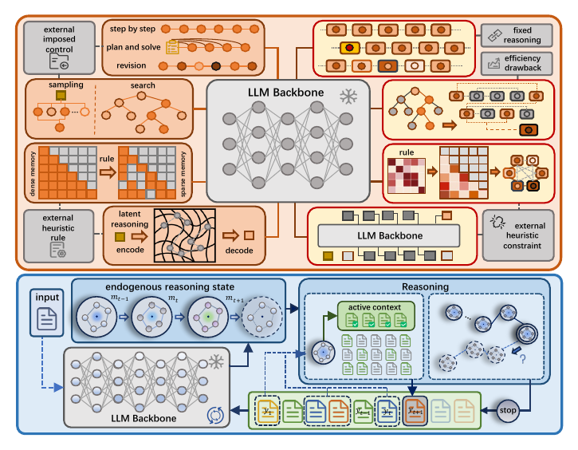

State of Thought Enables Endogenous Reasoning
NeurIPS 2026A 582-parameter controller reads the model's own internal state to pick evidence and stop early, raising accuracy while cutting roughly 62% of generated tokens and 45% of latency across 3 LLMs and 2 VLMs.